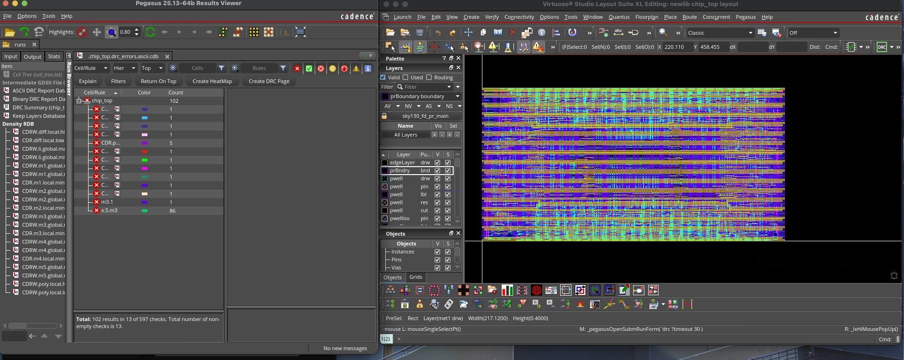
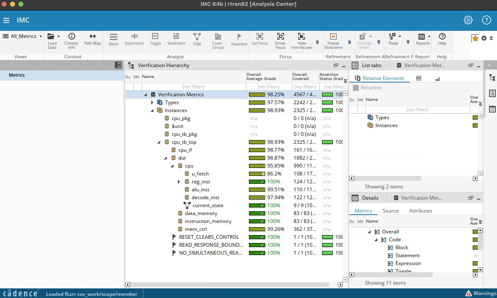
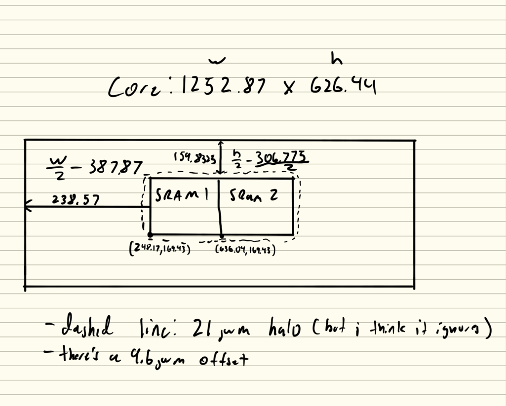

Discovery Project
A RISC-V CPU, from RTL to physical layout.
I built a small CPU core for SiliconJackets, verified its behavior, and took it through synthesis, placement, and routing. The physical implementation still has negative timing slack and unresolved DRC/LVS issues, so it is not ready for tapeout.


The idea
My original pitch was to take the SiliconJackets RISC-V CPU from simulation onto a Tang Nano 9K FPGA, with buttons, switches, and a display for stepping through programs and viewing registers. As the semester progressed, I focused on physical design (PD): taking the CPU through synthesis, floorplanning, placement, routing, and analysis. I did not get to FPGA deployment or the front-panel build.
The project became an opportunity to follow the same CPU through digital design, verification, and physical design, and see where a design that makes sense in code runs into implementation constraints.
The core implements a small RV32I-style instruction subset: arithmetic, logical shifts, word loads and stores, conditional branches, and an ebreak halt. It uses 32-bit data and a 32-register file, with x0 held at zero. SiliconJackets supplied the chip-level framework, SRAMs, memory controller, and onboarding scaffolds. My work centered on implementing and integrating the CPU, checking its behavior, and running and modifying the physical-design flow.
The process
1. Build the core
I connected the register file, ALU, decoder, and fetch logic with a multicycle controller. The controller moves through fetch, execute, memory-wait, and halt states. Loads wait for the SRAM response before writing back a result. The decoder extracts register addresses and sign-extends immediate values so the datapath can handle negative offsets as well as positive ones.
One issue was keeping the instruction stable between fetch and execute. I latched the instruction and program counter rather than relying on the fetch output to stay unchanged. Branches introduced another timing problem: the fetch logic was stalled during execution, so the branch decision had to survive until fetch could act on it. I registered that decision and handled the stale instruction after a taken branch.
2. Verify behavior
I used the SiliconJackets verification environment with Cadence Xcelium, SimVision, and IMC to exercise the CPU and inspect its behavior. The environment separates stimulus generation and driving from monitoring and scoreboard checks. That separation matters because an intended transaction is not proof that the hardware actually performed it. Waveforms made it possible to inspect memory enables, addresses, read data, and the halt signal cycle by cycle.
My IMC snapshot reports 98.87% code coverage for the DUT; the overall verification-metrics average is 98.25%. These are different hierarchy-level results. Coverage helped show which implementation paths were exercised, but it does not establish correctness on its own. Expected-value checks and investigation of failures are still necessary.


cpu_tb_top.dut, with an overall verification-metrics average of 98.25%. These simulation coverage results are separate from physical timing closure. Select the image to inspect it at full size.3. Take the design into a layout
After synthesis, I used the cell-area report to size the floorplan. I accounted for two SRAM macros and their halos, targeted 50% utilization, and chose a 2:1 aspect ratio. This produced a core approximately 1,252.87 × 626.44 μm. The floorplan report returned 49.99% utilization, close to the target. I placed the macros, configured power rings, and carried the design through placement and routing in Innovus.


I also experimented with clock gating and high-speed cells. I wrote a Tcl procedure to sum the negative slacks returned by a timing query, then compared the results between runs. This gave me a concrete way to evaluate changes instead of assuming that a different cell choice would improve the design.
Results & roadblocks
The FPGA portion of my original plan remains unfinished. I spent that time on the SiliconJackets physical-design flow, so I did not deploy this core to a board, build its front panel, or compare FPGA results against simulation. The results below come from simulation and the ASIC physical-design flow.
The main success was carrying one CPU across the design, verification, and physical-design stages. I could connect a control decision in the RTL to simulation behavior and then to a timing path in the implementation. The physical results also showed me where more work was needed.
| Run | Worst negative slack | Reported total negative slack |
|---|---|---|
| Baseline | −0.388 ns | −179.389 ns |
| Clock gating | −1.591 ns | −185.986 ns |
| High-speed cells + gating | −1.575 ns | −332.015 ns |
Negative slack indicates an unmet timing constraint. These values are the results recorded for the queried paths in each run.
Timing closure was not achieved. A GDSII file describes layout geometry; generating one does not mean the circuit meets timing or is ready to manufacture. My results demonstrate progress through the physical-design flow, with timing and physical-verification issues still to resolve before signoff.
Adding faster cells did not solve timing. The worst path changed after clock gating, and the high-speed-cell run only slightly improved worst slack while total negative slack worsened. That result taught me to examine the actual critical paths and constraints before deciding what to change next.
The physical checks also remained open: the DRC report showed 102 results, including 86 pin-polygon violations, and the LVS report showed 35 shorts. DRC checks layout geometry against manufacturing rules; LVS compares layout connectivity with the circuit. Reaching a routed layout was a useful milestone, but these reports did not establish a clean, fabrication-ready design. Resolving those issues and closing timing would be the next implementation work.
ECE skills I gained
- RTL integration: connecting datapath modules, managing state, and aligning control signals with memory latency.
- Verification and debugging: reading waveforms, separating stimulus from observations, and interpreting coverage at the correct hierarchy.
- Physical design: calculating a floorplan, placing SRAM macros, reserving halos, and configuring power distribution.
- Timing analysis and Tcl: comparing critical paths, extracting slack values, and evaluating implementation changes from reports.
- Physical verification: distinguishing design-rule violations from connectivity mismatches and recognizing what remains before signoff.
Looking back
This project reinforced my interest in the RTL-to-GDSII process. The part I found most useful was seeing how each stage changes the questions I need to ask: whether an instruction executes correctly, whether the tests observe enough, and whether the physical implementation meets its constraints. A successful simulation and a successful physical implementation require different evidence.
My threads are Circuit Technology and Electronic Devices, and this experience helped me focus that interest on digital implementation. I’m also interested in FPGAs, where I can keep exploring how RTL becomes working hardware. If I continue this CPU, I would start with the remaining timing and physical-verification issues, make one targeted change at a time, and compare the new reports against this baseline.